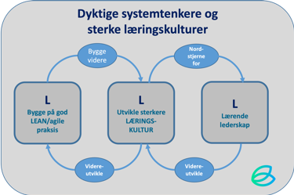

Featured
Systems Thinking with Obeya
A comprehensive guide for leaders adopting Lean principles.
Get the bookExplore our library of e-books, webinars and video resources designed for learning organizations. Gain insights on topics like systems thinking, learning leadership and Lean practices – available anytime, anywhere.
A comprehensive guide for leaders adopting Lean principles.
Get the book
Chapter-by-chapter videos, links and templates for Systems Thinking with Obeya, Lærende organisasjoner and LEAN – Ledelse for lærende organisasjoner.
Lecture notes, templates and articles from our courses and books – free to download.
Kursmateriell på norsk fra programmet «Lean ledelse for lærende organisasjoner».
Articles and templates that accompany the book.
Want to learn more about our offerings, or have specific challenges to address? Reach out.